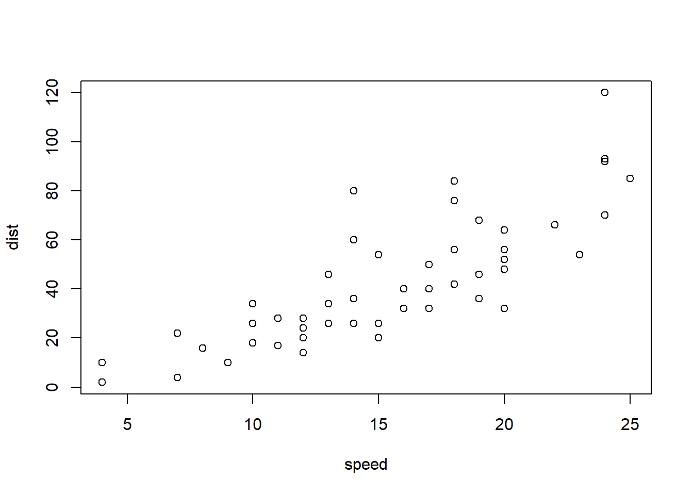

1.1 Overview
Welcome to [COURSE]
Topics
This unit is divided into the following topics: 1. 2. 3.
Unit Learning Outcomes
When you have completed this unit, you will be able to:
- Describe…
- Contrast…
- Analyze…
- Determine…
- Create…
Learning Activities
Here is a list of learning activities that will benefit you in completing this unit. You may find it useful for planning your work.
Assessment
Please see the Assessment section in Moodle for assignment details.
Resources
Here are the resources you will need to complete this unit.
- (Textbook)
- Other online resources will be provided in the unit.
1.2 Title for Topic 1
We begin Unit 1…
(add content)
1.2.1 Activity: Title (e.g. Read, Reflect and View)
1.3 Title for Topic 2
(add content)
1.3.1 Activity: Title
1.4 Title for Topic 3
(add content)
…
1.4.1 Activity: Title
Summary
In this first unit, you have had the opportunity to learn about…
(add content)
References
Practice Quiz
This is a Web Exercise template created by the psychology teaching team at the University of Glasgow, based on ideas from Software Carpentry. This template shows how instructors can easily create interactive web documents that students can use in self-guided learning.
The {webexercises} package provides a number of functions that you use in inline R code or through code chunk options to create HTML widgets (text boxes, pull down menus, buttons that reveal hidden content). Examples are given below. Render this file to HTML to see how it works.
NOTE: To use the widgets in the compiled HTML file, you need to have a JavaScript-enabled browser.
1.5 Example Questions
1.5.1 Fill-In-The-Blanks (fitb())
Create fill-in-the-blank questions using fitb(), providing the answer as the first argument.
- 2 + 2 is
You can also create these questions dynamically, using variables from your R session.
- The square root of 25 is:
The blanks are case-sensitive; if you don’t care about case, use the argument ignore_case = TRUE.
- What is the letter after D?
If you want to ignore differences in whitespace use, use the argument ignore_ws = TRUE (which is the default) and include spaces in your answer anywhere they could be acceptable.
- How do you load the tidyverse package?
You can set more than one possible correct answer by setting the answers as a vector.
- Type a vowel:
You can use regular expressions to test answers against more complex rules.
- Type any 3 letters:
1.5.2 Multiple Choice (mcq())
- “Never gonna give you up, never gonna: ”
- “I down in Africa” -Toto
1.5.3 True or False (torf())
- True or False? You can permute values in a vector using
sample().
1.5.4 Longer MCQs (longmcq())
When your answers are very long, sometimes a drop-down select box gets formatted oddly. You can use longmcq() to deal with this. Since the answers are long, It’s probably best to set up the options inside an R chunk with echo=FALSE.
What is a p-value?
What is true about a 95% confidence interval of the mean?
1.6 Activity: Locus of Control Assessment
Interpreting Your Score
40–50: Strong Internal Locus of Control. You believe that your actions and decisions largely determine the outcomes in your life. You take responsibility for your successes and failures and are likely to see challenges as opportunities for growth.
30–39: Moderate Internal Locus of Control. You lean towards an internal locus of control but may occasionally attribute outcomes to external factors.
20–29: Moderate External Locus of Control. You believe that external factors such as luck, fate, or other people significantly influence your life.
10–19: Strong External Locus of Control. You feel that forces outside your control is largely controlling your life, such as luck, fate, or powerful external influences.
Reflection Questions
How does your locus of control influence your leadership style?
In what ways can you develop a more balanced perspective if needed?
How might your locus of control affect how you approach challenges and decision-making as a leader?
This questionnaire can serve as a foundation for understanding how your perceptions of control shape your leadership behaviors and strategies.
Note: Make note of your results as they will serve as a good references source when you write your reflection post.